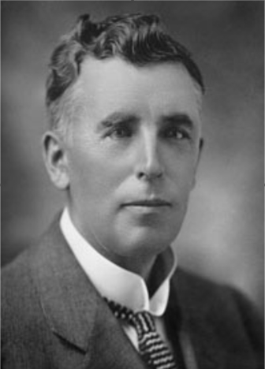

-1-MasterItem.svg)
Stories of Westminster United Church & its People / Page
52
DAVID’S STORY
David, following completion of his formal education and training
as a minister, “delivered the remainder of his trials for license, and,
having answered the questions of the formula was duly licensed to preach
the Gospel.” That’s the way it was described in a newspaper of the time.
The date was December, 1889, the place Arbroath, Scotland on the North
Sea coast, south of Aberdeen. Arbroath's history as a town begins in the
High Middle Ages with the founding of Arbroath Abbey in 1178.)
David’s history begins in Arbroath in 1865.
David’s first work was as assistant to the Rev. A.G. Fleming, Paisley,
Scotland, as reported in April, 1890 and as missionary to Thread Street,
United Presbyterian Church, also in Paisley. His first call shortly after
in May was to St. Andrew Square United Presbyterian Church, Greenock, elected
from a number
of candidates for the job by a large majority of the congregation.
By June he received his second call (did he have only one month at St. Andrews?)
to Northumberland
Square Presbyterian Church, North Shield’s, England. A call he readily accepted.
All this information comes from news articles-April to June, 1890, in the
Arbroath Herald
and Advertiser
.
With such a flurry of activity in so short a time David would seem to have been
an outstanding
player, even in the first few months of his employment. Somewhere between his
ordination and
his call to North Shields he married Margaret Fleming , Rev. Fleming’s daughter. For the record
their witnesses at the marriage ceremony were James Mooney (brick field
labourer, bachelor)
and Maggie Mulheron (thread mill worker, spinster).
At David’s first Sunday service appearance before the North Shields congregation (1891)
Rev. James
Murray conducted the service and David gave the sermon. Following the sermon
David’s career as
a college student and his early work as a minister were encapsulated in an
address by Rev. Murray.

Rev. DAvid christie